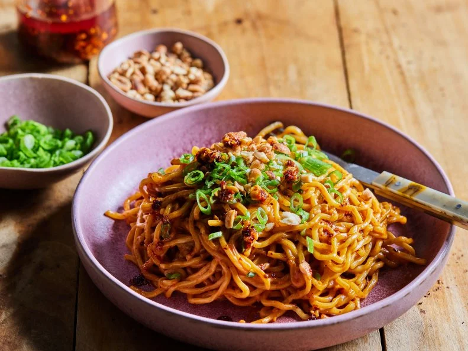

Spicy Peanut Noodles
Home

Description
Whip up this quick, versatile peanut sauce and pair it with your favorite noodles (rice noodles, yakisoba, egg noodles, spaghetti--whatever you have on hand) for a satisfying bowl that is ready in just 15 minutes. Inspired by Chinese sesame noodles, this recipe relies on peanut butter instead of Chinese sesame paste (zhī ma jiàng) for a nutty, savory flavor, though feel free to sub in sesame paste (or use a combination of both) if you have it at home. The dish is easy to adapt: Add more chili crisp or ginger for a bolder version, a little more sugar for a sweeter sauce or a bit of water to thin it out.
Ingredients
- Two 10-ounce packages fresh ramen noodles
- 1/4 cup creamy peanut butter
- 3 tablespoons chili crisp, plus more if desired
- 2 tablespoons toasted sesame oil
- 2 tablespoons low-sodium soy sauce
- 2 tablespoons rice vinegar
- 1 tablespoon granulated sugar
- 1 teaspoon grated ginger
- Chopped scallions and honey-roasted peanuts, for garnish
Steps
- Cook the noodles according to the package instructions.
- Meanwhile, combine the peanut butter, chili crisp, sesame oil, soy sauce, rice vinegar, sugar and ginger in a large bowl and whisk to combine. (The sauce might look curdled, but keep whisking until smooth.)
- Drain the noodles, add them to the bowl with the sauce and toss until the noodles are nicely coated. Garnish with chopped scallions and peanuts. Add additional chili crisp if you prefer more spice.